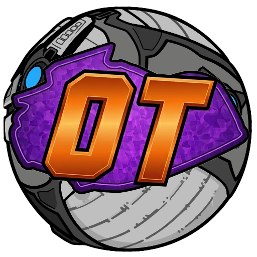

Starting…
Connect your Epic Games account to download match replays automatically.
Drop .replay files to import
No replays yet.
Your browser should open to Epic's sign-in page. Enter this code when prompted:
Waiting for you to sign in…
Overtime saves your Rocket League replays in the background and keeps them organized in one place.
Sign in with Epic so Overtime can download your replays automatically.
This works for all platforms (PC, PlayStation, Xbox, and Switch). You can add more accounts later in Settings.
Without an Epic account, Overtime cannot download replays for you. You can still import replay files yourself and browse your library, but there will be no automatic saves.
You can link an account later in Settings.
You can change this anytime in Settings.
You can always sync replays manually with the Sync button, no matter which option you pick.
Choose when Overtime should download your replays during a play session. It always downloads them once when you close the game.
Ballchasing is a free website where you can upload Rocket League replays, view detailed match stats, and share links with friends.
Your API token lets Overtime upload replays to Ballchasing for you. Get it from . You can skip this and set it up later in Settings.
A few optional settings for how Overtime runs on your PC.
Delete this replay file from your replay folder?
Remove the local replay file? The replay will stay in your library as cloud-only.